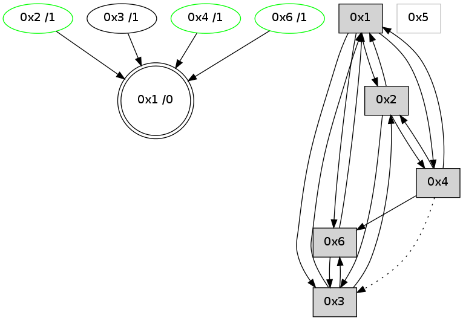

>> << IDX [start] -100 -25 -5 +0 +5 +25 +100 [750.122478008]
 Previous packets
----------------------------------------------------------------------
745.201398 beacon01(adaf) #0 coord=01,02,05,03,04,06 cycle=432.0ms assoc
-- color-indic=0 64 bc 01
745.211360 beacon02(adaf) #0 coord=01,02,05,03,04,06 cycle=432.0ms assoc 64 ed fe
745.221360 beacon05(adaf) #0 coord=01,02,05,03,04,06 cycle=432.0ms assoc 64 4b d4
745.231360 beacon03(adaf) #0 coord=01,02,05,03,04,06 cycle=432.0ms assoc 64 d7 f0
745.241361 beacon04(adaf) #0 coord=01,02,05,03,04,06 cycle=432.0ms assoc 64 71 da
745.251360 beacon06(adaf) #0 coord=01,02,05,03,04,06 cycle=432.0ms assoc 64 05 c6
745.262493 [Hello(1): seq=447 sym=2,3,4,6 sysInfo= stat=2:14,0,10,12/3:2,0,0,0/4:3,0,3,0/6:9,0,7,8]
745.265162 [Hello(4): seq=548 sym=6,1,2 asym=3 sysInfo= stat=6:6,0,3,4/1:9,0,3,0/2:12,0,4,5/3:0,0,0,0]
745.268360 [STC(4)->1 #0.43 stable,to-color d=1]
745.271610 [TreeStatus(4)-.->1 #0.43 stable child=1]
745.278212 [Hello(3): seq=546 sym=2,1,6 sysInfo=hasWarning stat=2:5,0,3,5/1:10,0,15,0/6:12,0,3,4]
745.280913 [STC(3)->1 #0.43 to-color d=1]
----------------------------------------------------------------------
745.693506 beacon01(adaf) #0 coord=01,02,05,03,04,06 cycle=432.0ms assoc
-- color-indic=0 64 78 6e
745.703466 beacon02(adaf) #0 coord=01,02,05,03,04,06 cycle=432.0ms assoc 64 29 91
745.713466 beacon05(adaf) #0 coord=01,02,05,03,04,06 cycle=432.0ms assoc 64 8f bb
745.723466 beacon03(adaf) #0 coord=01,02,05,03,04,06 cycle=432.0ms assoc 64 13 9f
745.733468 beacon04(adaf) #0 coord=01,02,05,03,04,06 cycle=432.0ms assoc 64 b5 b5
745.743468 beacon06(adaf) #0 coord=01,02,05,03,04,06 cycle=432.0ms assoc 64 c1 a9
745.755179 [Hello(2): seq=1039 sym=4,1,3 asym=6 sysInfo= stat=4:1,0,1,1/1:6,0,1,0/3:12,0,3,1/6:0,0,0,1]
----------------------------------------------------------------------
746.185613 beacon01(adaf) #0 coord=01,02,05,03,04,06 cycle=432.0ms assoc
-- color-indic=0 64 26 0f
746.195574 beacon02(adaf) #0 coord=01,02,05,03,04,06 cycle=432.0ms assoc 64 77 f0
746.205574 beacon05(adaf) #0 coord=01,02,05,03,04,06 cycle=432.0ms assoc 64 d1 da
746.215575 beacon03(adaf) #0 coord=01,02,05,03,04,06 cycle=432.0ms assoc 64 4d fe
746.225574 beacon04(adaf) #0 coord=01,02,05,03,04,06 cycle=432.0ms assoc 64 eb d4
746.235577 beacon06(adaf) #0 coord=01,02,05,03,04,06 cycle=432.0ms assoc 64 9f c8
746.247258 [Hello(3): seq=547 sym=2,1,6 sysInfo=hasWarning stat=2:5,0,3,5/1:10,0,15,0/6:13,0,3,4]
746.250967 [Hello(4): seq=549 sym=6,1,2 asym=3 sysInfo= stat=6:7,0,3,4/1:10,0,3,0/2:12,0,4,5/3:1,0,1,0]
746.257875 [Hello(1): seq=448 sym=2,3,4,6 sysInfo= stat=2:15,0,10,12/3:3,0,1,0/4:4,0,4,1/6:9,0,7,8]
----------------------------------------------------------------------
746.677721 beacon01(adaf) #0 coord=01,02,05,03,04,06 cycle=432.0ms assoc
-- color-indic=0 64 e2 60
746.687682 beacon02(adaf) #0 coord=01,02,05,03,04,06 cycle=432.0ms assoc 64 b3 9f
746.697682 beacon05(adaf) #0 coord=01,02,05,03,04,06 cycle=432.0ms assoc 64 15 b5
746.707682 beacon03(adaf) #0 coord=01,02,05,03,04,06 cycle=432.0ms assoc 64 89 91
746.717682 beacon04(adaf) #0 coord=01,02,05,03,04,06 cycle=432.0ms assoc 64 2f bb
746.727682 beacon06(adaf) #0 coord=01,02,05,03,04,06 cycle=432.0ms assoc 64 5b a7
746.739404 [Hello(2): seq=1040 sym=4,1,3 asym=6 sysInfo= stat=4:2,0,1,1/1:7,0,1,0/3:13,0,3,1/6:0,0,0,1]
----------------------------------------------------------------------
747.169828 beacon01(adaf) #0 coord=01,02,05,03,04,06 cycle=432.0ms assoc
-- color-indic=0 64 ae d0
747.179789 beacon02(adaf) #0 coord=01,02,05,03,04,06 cycle=432.0ms assoc 64 ff 2f
747.189791 beacon05(adaf) #0 coord=01,02,05,03,04,06 cycle=432.0ms assoc 64 59 05
747.199791 beacon03(adaf) #0 coord=01,02,05,03,04,06 cycle=432.0ms assoc 64 c5 21
747.209789 beacon04(adaf) #0 coord=01,02,05,03,04,06 cycle=432.0ms assoc 64 63 0b
747.219790 beacon06(adaf) #0 coord=01,02,05,03,04,06 cycle=432.0ms assoc 64 17 17
747.231517 [Hello(4): seq=550 sym=6,1,2 asym=3 sysInfo= stat=6:7,0,3,4/1:11,0,3,0/2:12,0,4,5/3:1,0,1,0]
747.236768 [Hello(1): seq=449 sym=2,3,4,6 sysInfo= stat=2:0,0,10,12/3:3,0,1,0/4:4,0,4,1/6:9,0,7,8]
747.241170 [STC(1) #0.44 to-color d=0]
----------------------------------------------------------------------
747.661936 beacon01(adaf) #0 coord=01,02,05,03,04,06 cycle=432.0ms assoc
-- color-indic=0 64 6a bf
747.671899 beacon02(adaf) #0 coord=01,02,05,03,04,06 cycle=432.0ms assoc 64 3b 40
747.681897 beacon05(adaf) #0 coord=01,02,05,03,04,06 cycle=432.0ms assoc 64 9d 6a
747.691897 beacon03(adaf) #0 coord=01,02,05,03,04,06 cycle=432.0ms assoc 64 01 4e
747.701897 beacon04(adaf) #0 coord=01,02,05,03,04,06 cycle=432.0ms assoc 64 a7 64
747.711897 beacon06(adaf) #0 coord=01,02,05,03,04,06 cycle=432.0ms assoc 64 d3 78
747.723440 [STC(3)->1 #0.44 to-color d=1]
747.727330 [STC(4)->1 #0.44 stable,to-color d=1]
747.729472 [Hello(2): seq=1041 sym=4,1,3 asym=6 sysInfo= stat=4:2,0,1,1/1:8,0,2,0/3:14,0,3,1/6:0,0,0,1]
747.732466 [STC(6)->1 #0.44 stable,to-color d=1]
747.734205 [TreeStatus(4)-.->1 #0.44 stable child=1]
747.738090 [TreeStatus(6)-.->1 #0.44 stable child=1]
747.741915 [STC(2)->1 #0.44 stable,to-color d=1]
747.745814 [TreeStatus(2)-.->1 #0.44 stable child=1]
----------------------------------------------------------------------
748.154045 beacon01(adaf) #0 coord=01,02,05,03,04,06 cycle=432.0ms assoc
-- color-indic=0 64 27 b8
748.164005 beacon02(adaf) #0 coord=01,02,05,03,04,06 cycle=432.0ms assoc 64 76 47
748.174006 beacon05(adaf) #0 coord=01,02,05,03,04,06 cycle=432.0ms assoc 64 d0 6d
748.184006 beacon03(adaf) #0 coord=01,02,05,03,04,06 cycle=432.0ms assoc 64 4c 49
748.194007 beacon04(adaf) #0 coord=01,02,05,03,04,06 cycle=432.0ms assoc 64 ea 63
748.204007 beacon06(adaf) #0 coord=01,02,05,03,04,06 cycle=432.0ms assoc 64 9e 7f
748.215744 [Hello(4): seq=551 sym=6,1,2 asym=3 sysInfo= stat=6:7,0,3,5/1:12,0,4,0/2:12,0,5,6/3:1,0,1,0]
748.224050 [Hello(1): seq=450 sym=2,3,4,6 sysInfo= stat=2:1,0,11,13/3:3,0,2,0/4:4,0,5,2/6:9,0,8,9]
----------------------------------------------------------------------
748.646154 beacon01(adaf) #0 coord=01,02,05,03,04,06 cycle=432.0ms assoc
-- color-indic=0 64 e3 d7
748.656114 beacon02(adaf) #0 coord=01,02,05,03,04,06 cycle=432.0ms assoc 64 b2 28
748.666116 beacon05(adaf) #0 coord=01,02,05,03,04,06 cycle=432.0ms assoc 64 14 02
748.676114 beacon03(adaf) #0 coord=01,02,05,03,04,06 cycle=432.0ms assoc 64 88 26
748.686115 beacon04(adaf) #0 coord=01,02,05,03,04,06 cycle=432.0ms assoc 64 2e 0c
748.696116 beacon06(adaf) #0 coord=01,02,05,03,04,06 cycle=432.0ms assoc 64 5a 10
748.707853 [Hello(2): seq=1042 sym=4,1,3 asym=6 sysInfo= stat=4:2,0,1,1/1:9,0,2,0/3:14,0,3,1/6:0,0,0,1]
----------------------------------------------------------------------
749.138262 beacon01(adaf) #0 coord=01,02,05,03,04,06 cycle=432.0ms assoc
-- color-indic=0 64 af 67
749.148223 beacon02(adaf) #0 coord=01,02,05,03,04,06 cycle=432.0ms assoc 64 fe 98
749.158223 beacon05(adaf) #0 coord=01,02,05,03,04,06 cycle=432.0ms assoc 64 58 b2
749.168224 beacon03(adaf) #0 coord=01,02,05,03,04,06 cycle=432.0ms assoc 64 c4 96
749.178223 beacon04(adaf) #0 coord=01,02,05,03,04,06 cycle=432.0ms assoc 64 62 bc
749.188224 beacon06(adaf) #0 coord=01,02,05,03,04,06 cycle=432.0ms assoc 64 16 a0
749.199953 [Hello(4): seq=552 sym=6,1,2 asym=3 sysInfo= stat=6:7,0,3,5/1:13,0,4,0/2:12,0,5,6/3:1,0,1,0]
749.204423 [Hello(1): seq=451 sym=2,3,4,6 sym= sysInfo= stat=]
----------------------------------------------------------------------
749.630370 beacon01(adaf) #0 coord=01,02,05,03,04,06 cycle=432.0ms assoc
-- color-indic=0 64 6b 08
749.640330 beacon02(adaf) #0 coord=01,02,05,03,04,06 cycle=432.0ms assoc 64 3a f7
749.650331 beacon05(adaf) #0 coord=01,02,05,03,04,06 cycle=432.0ms assoc 64 9c dd
749.660331 beacon03(adaf) #0 coord=01,02,05,03,04,06 cycle=432.0ms assoc 64 00 f9
749.670331 beacon04(adaf) #0 coord=01,02,05,03,04,06 cycle=432.0ms assoc 64 a6 d3
749.680332 beacon06(adaf) #0 coord=01,02,05,03,04,06 cycle=432.0ms assoc 64 d2 cf
749.692030 [Hello(2): seq=1043 sym=4,1,3 sysInfo= stat=4:2,0,1,1/1:10,0,2,0/3:14,0,3,1]
749.694336 [STC(1) #0.45 to-color d=0]